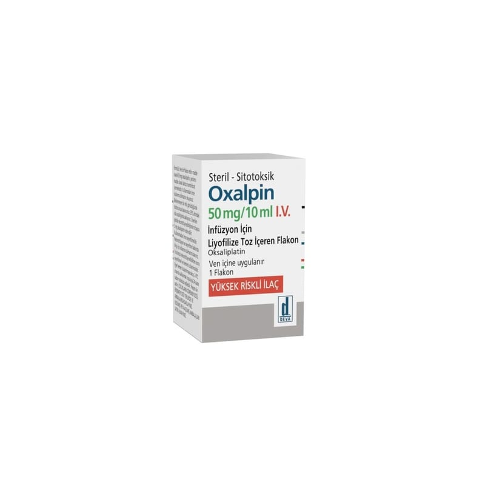

Oxalpin 50 mg/10 ml IV İnfüzyon İçin Liyofilize Toz İçeren Flakon, 1 Adet

Ne için kullanılır
KT · Bölüm 1• OXALPİN beyaz veya beyazımsı renkte toz kütlesidir, sulandırılarak çözelti haline getirilir ve seyreltilerek damar yoluyla uygulanır. • OXALPİN okzaliplatin etkin maddesini içerir. Kutunun içinde i adet eam flakon bulunur. Her f1akonda toz halinde 50 mg oksaliplatin etkin maddesi bulunmaktadır. • OXALPİN, kanser tedavisinde kuııanılan antineoplastik (antikanser) bir ilaçtır ve platin içerir. • Doktorunuz size OXALPİN'i, kalın barsak kanserinde (birincil tümör vücudul1uzdan tamamen çıkarıldıktan sonra) veya vücudun diğer kısımlarına dağılmış kalın barsak ve kalın barsağın aşağı bölümü (rektum) kanserinin tedavisi için reçetelemiş olabilir. • OXALPİN, 5-fluorourasil ve folinik asit, bevasizuınab, kapesitabln adlı başka kanser ilaçlarıyıa birlikte uygulanır. 2. OXALPİN'i kullanmadan önce dikkat edilmesi gerel{enlcr OXALPİN'i aşağıdaki dUI'umlarda KULLANMAYıNIZ Eğer: • Daha önee okzaliplatine karşı aşırı duyarlı (alerjik) iseniz,
• Bebeğinizi emziriyorsanız, • Kan hücrelerinizin (beyaz kan hücreleri ve/veya kan pulcukları) sayısı düşükse, • El ve/veya ayak parmaklarınızda karıncalanma ve uyuşma varsa ve giysilerinizi düğmelemek gibi ince işleri yapmakta zorluk çekiyorsanız, • Hamile iseniz veya hamile kalmayı planlıyorsanız. OXALPİN'i aşağıdaki durumlarda DİKKATLİ KULLANıNız Eğer: • Daha önce karboplatin, sisplatin gibi, platin-içeren ilaçlara karşı aşırı duyarlı (alerjik) iseniz. Alerjik reaksiyonlar herhangi bir okzaliplatin infüzyonu sırasında meydana gelebilir. • Orta veya ağır derecede böbrek yetmezliğiniz varsa, • Karaciğer ile ilgili sorunlarınız varsa, • Geri dönüşümlü posterior lökoensefalopati sendromu olarak bilinen bir hastalığınız var ise (belirtileri: baş ağrısı, zihinsel işlev bozukluğu, titreıne ve bulanık görmeden körlüğe kadar gidebilen görme bozuklukları ve olası yüksek tansiyon) • Baba olmayı planlıyorsanız (OXALPİN üreme yeteneğini olumsuz yönde etkileyebilir. Erkek hastaların, tedavi sırasında ve 6 ay sonrasına kadar baba olmamaları gerekir. Doktorunuz spermlerinizin korunması için size uygun talimatları verecektir). Bu uyarılar geçmişteki herhangi bir dönemde dahi olsa sizin için geçerliyse, lütfen döktorunuza danışınız. OXALPİN'in yiyecek ve içecek ile kullanılması: İlacın infüzyonu sırasında veya inflizyonu izleyen saatlerde, ağız çevresinde veya boğazınızda karıncalanma ve uyuşma gibi duyusal bozukluklar hissedebilirsiniz. Bunun önüne geçmek için, soğuğa maruz kalmayınız ve OXALPİN uygulaması sırasında ya da uygulamayı izleyen saatlerde, serin/soğuk yiyecekler ve/veya içecekler almaktan kaçınınız.. Hamilelik: İlacı kullanmadan önce doktorunuza veya eczacınıza danışınız. • Hamileyseniz veya hamile kalmayı planlıyorsanız, OXALPİN'i kullanmayınız. • OXALPİN ile tedavi sırasında hamile kalmaktan kaçınınız ve etkili bir doğum kontrol yöntemi uygulayınız. Aksi takdirde bebeğiniz ilaçtan zarar görebilir. • Tedavi sırasında hamile kalırsanız, hemen doktorunuzu bilgilendiriniz. Tedavi sırasında ve tedavi kesildikten sonra, kadınsanız 4 ay, erkekseniz 6 ay süreyle etkili bir doğum kontrol yöntemi kullanınız. Tedaviniz sırasında hamile olduğunuzu fark ederseniz hemen doktorunuza veya eczacınıza danışınız. Emzirme İlacı kullanmadan önce doktorunuza veya eczacıl1lZ{[ danış/nız. OXALPİN ile tedavi gördüğünüz sırada bebeğinizi emzirmeyiniz. 2/7
Araç ve makine kullanımı
OXALPİN tedavisi, sersemlik, bulantı ve kusma risklnde artışa ve yiirüme ve dengeyi
etkileyen, sinir sistemiyle ilgili diğer belirtilere, görme bozukluklarına ve geçici görme
kaybına yol açabilir. İlaç uygulandıkıan sonra bu belirtiler sizde de varsa, araç ve makine
kullanmayınız.
OXALPİN'in içeriğinde bulunan bazı yardımcı maddeler hakkında önemli bilgiler
Özel önlem alınmasmı gerektirecek yardımcı madde içenilez.
Diğer ilaçlar ile birlikte kullanımı
OXALPİN ile diğer ilaçlar arasında etkileşme olabileceğinden, doktorunuza danışmadan
başka bir tıbbi tedavi kullanmayınız.
Böbrekler üzerine zararlı etkisi olan ilaçlarla birlikte kullanımı:
OXALPİN esas itibariyle böbreklerden atıldığından, böbrekler üzerine zararlı etkisi olan diğer
ilaçlarla aynı anda kuııanımı atılımmı azaltabilir.
5-Fluorourasil (5-FU) ile birlikte kullanımı:
OXALPİN, 5-FU ile birlikte olağan dozda kullanıldığında, S-FU etkisinde artıŞ veya azalma
olmaz. OXALPİN olağan dozundan daha yüksek dozda verildiğinde ise, S-FU etkisi artabilir.
Eğer reçeteli ya da reçetesiz herhangi bir ilacı şu anda kullanıyorsanız veya son zamanlarda kullandınız ise, lütfen doktorunuza veya eezacınıza bunlar hakkında bilgi veriniz.